Common knowledge · two agents · 30 × 50 m hall · ROS 2
Two robots must lift one load together, one under each end. A work order names which of two stands, s1 or s2, and only south can read it; the racking block of the pass-through floor keeps the two robots out of sight of each other. An end raised alone tips the load, so each robot raises its end only if it knows the other raises the other, and the weakest condition that settles both is common knowledge of the stand. That is the precondition of lift.
Two channels are available. A radio reaches either robot from anywhere and can lose a message without anyone knowing that it did. A stack light in the open bay is seen only from that bay's two mouths. Over the radio, four messages, every one of them delivered, raise the depth of mutual knowledge from \(E^0\) to \(E^4\), and the executor refuses the lift. The beacon, seen by both robots from their viewpoints, gives common knowledge in one update, and the two robots lift the load from a joint start with their arrivals 0.40 s apart.
Every message in the runs is delivered: only delivery is designated, and the argument is that delivery does not suffice. The radio floor has no policy for any number of messages, which is proved below over the event model; the planner proves it for one message per level of nesting. On the radio and beacon floors the positions of the robots are common knowledge by the policy both robots run; on the positions floors they are learned, by a sighting each robot makes with its own laser. The lift is drawn by moving the load in the simulator once both robots are under it.
Package coordinated_attack_demo, on the floor of pass_through_demo; policy from eplansys, grounding by plank, search by Aletheia. Full account in The Coordinated Attack on a Warehouse Floor (PDF): the event models, the proofs, the planning results, the grounding on the floor, the runs and the defects found on the way. The same domain for any number of robots, with four of them on this floor, is in The coordinated attack among many robots.
The runs
| action | what the run reported | model after |
|---|---|---|
| plan | no policy for lifted, after 0.2 s: the search space is exhausted at depth 5 | 2 worlds, 2 designated |
| read-order(south, s1) | at the terminal after 12 s; the order names s1; e-here | 2 / 1 · \(E^0\) |
| tell(south, north, s1) | “\(K_{south}\,\mathit{job}(s_1)\)” delivered; south cannot tell whether it was | 4 / 1 · \(E^1\) |
| ack(north, south, s1) | “\(K_{north}K_{south}\,\mathit{job}(s_1)\)” delivered | 6 / 1 · \(E^2\) |
| ack2(south, north, s1) | delivered | 8 / 1 · \(E^3\) |
| ack3(north, south, s1) | delivered | 10 / 1 · \(E^4\) |
| lift(s1) | knowledge requirement does not hold: (C (south north) job_s1); neither robot moves | refused |
| action | what the run reported | model after |
|---|---|---|
| plan | a policy of depth 5 with 2 leaves, in 0.2 s; it does not use the radio | 2 worlds, 2 designated |
| go-view(north) | at its viewpoint after 17 s; the beacon in line of sight, 3.5 m | 2 / 2 |
| read-order(south, s1) | at the terminal after 12 s; the order names s1; e-here | 2 / 1 · \(E^0\) |
| go-view(south) | at its viewpoint after 47 s; the beacon in line of sight, 3.5 m | 2 / 1 · \(E^0\) |
| signal(south, s1) | the s1 tier lit; in line of sight of it: south (3.5 m), north (3.5 m) | 3 / 1 · \(C\) |
| lift(s1) | both at their mouths of s1, out of sight of each other; one start for both; under the load after 13.5 and 13.1 s: starts 0.00 s apart, arrivals 0.40 s apart; load raised 0.12 m | 1 world |
With the order naming s2, run headless, the read gave e-elsewhere, the s2 tier was lit, \(C\,\mathit{job}(s_2)\) held, and the load on s2 came up with the arrivals 0.60 s apart.
What the runs show
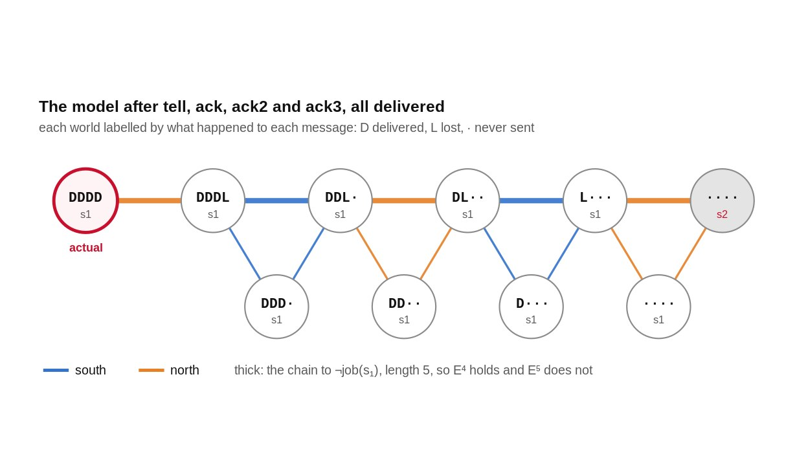
The radio One level per message, and never more A lossy message adds at most one level of mutual knowledge, delivered or not. Four delivered messages reached \(E^4\); no number of them reaches \(C\). Read the proof →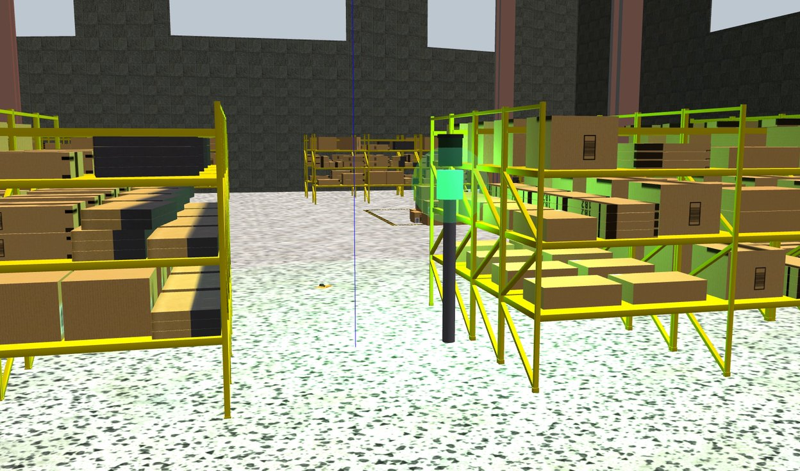
The beacon Common knowledge in one update A signal seen from viewpoints that are themselves common knowledge is a public announcement. Seen by one robot, it gives the other nothing. See the two cases →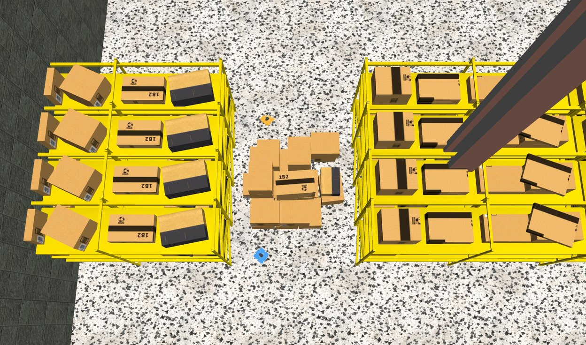
The floor Under one load, and blind to each other Three metres apart with the load between them, the robots cannot see each other, so meeting at the stand gives nothing the start did not. Check the geometry →The problem
Agents \(G = \{\mathit{south}, \mathit{north}\}\) and stands \(s_1, s_2\). The initial model has two worlds, both designated, with \(\mathit{job}(s_k)\) true in \(w_k\) only and both relations total:
With \(E_G\varphi\) for “both robots know \(\varphi\)”, \(E_G^{k+1}\varphi = E_G E_G^k\varphi\), and \(C_G\varphi\) for every \(E_G^k\varphi\) at once[4], the precondition is the coordinated attack of Gray[5] and of Akkoyunlu, Ekanadham and Huber[1] in the form Halpern and Moses gave it[6]: an action that must be taken by both agents or by neither is taken only where its being taken is common knowledge. The domain states that as a precondition. It does not assume the other half of their result, that a lossy channel cannot produce common knowledge; it is derived below for the event model the domain gives a message.
| action | type | events | observers |
|---|---|---|---|
| read-order(i, s) | semi-private sensing | e-here: job(s) · e-elsewhere: ¬job(s); both ¬at-view(i) | i fully, the other partially |
| tell, ack, ack2, ack3 (i, j, s) | lossy message | d, l: Kiψk ∧ ¬pk, post pk · n: true | i sender, j receiver |
| go-view(i) | public ontic | beacon ∧ ¬at-view(i); post at-view(i) | everyone |
| signal(i, s) | conditional announcement | σ: at-view(i) ∧ Ki job(s) · n: true | at a viewpoint fully, elsewhere obliviously |
| lift(s) | public ontic | job(s) ∧ CG job(s); post lifted | everyone |
The two instances, the radio floor and the beacon floor, differ in one line: whether \(\mathit{beacon}\) is common knowledge. \(\psi_1 = \mathit{job}(s)\) and \(\psi_{k+1} = K_i\psi_k\), with sender and receiver alternating: each message says that its sender knows what the last one said.
The epistemic actions
Each action is an event model[2][7]: events with preconditions and postconditions, and for each observability type a relation saying which events an agent of that type cannot tell apart. The product update \(M \otimes E\) pairs a world with every event whose precondition holds there, and relates two pairs for an agent when it could not tell the worlds apart and cannot tell the events apart. The lossy message is not in the intermediate action-type library and is given in a library of its own; the signal's audience is conditional, decided by whether the agent stands at a viewpoint. plank and Aletheia evaluate such conditions once per state, at the designated worlds, so who observed an action is common knowledge by construction; on this floor that agrees with the per-world reading, since the move to a viewpoint is public, and the next domain is where it does not.
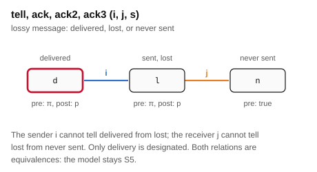
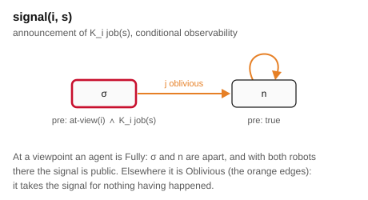
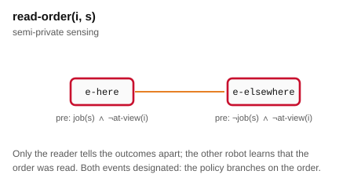
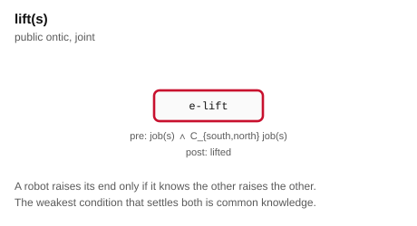
The third event of the message is what lets the sender know that it sent. A message with only d and n, the sender relating them, also keeps the model S5, but its sender considers possible a world in which it never transmitted. With l the sender's class at the delivered copy is \(\{d, l\}\), at both of which the send log \(p\) holds.
The radio
Let \(\mathrm{dist}_M(\varphi)\) be the length of the shortest path, over the union of the two relations, from a designated world to a world where \(\varphi\) fails, and \(\mathrm{depth}_M(\varphi) = \mathrm{dist}_M(\varphi) - 1\). Because every relation is reflexive, a path of length at most \(k\) extends to one of length exactly \(k\), and so
The depth is therefore read off a breadth-first walk from the designated worlds, and the walk gives a witness: the chain of agents along the shortest path to a counterexample. The run's knowledge view and the offline trace both compute it this way.
If \(M\) is S5, so is \(M \otimes L(i,j,\pi,p)\). Each relation of the product is the restriction, to the pairs that exist, of the product of an equivalence on worlds with an equivalence on events.
Let \(M\) be S5 with \(M \models \varphi\), \(\varphi\) not mention \(p\), and \(\pi\) be preserved along \(R_i\), as \(K_i\psi \wedge \neg p\) is when \(p\) is false throughout. If \(L = L(i,j,\pi,p)\) is applicable,
Proof. Take a shortest path \(w = v_0 \xrightarrow{a_1} v_1 \cdots \xrightarrow{a_m} v_m\) from a designated \(w\) to \(v_m \not\models \varphi\). Since \(\mathit{pre}(n) = \top\) and \((n,n)\) is in both relations, the \(n\)-copies \((v,n)\) form a copy of \(M\), and \((v_m,n)\) still falsifies \(\varphi\). If \(a_1 = j\), then \((v_0,d) \mathrel{R'_i} (v_0,l) \mathrel{R'_j} (v_1,n)\); if \(a_1 = i\), then \(\pi\) holds at \(v_1\) and \((v_0,d) \mathrel{R'_i} (v_1,l) \mathrel{R'_j} (v_1,n)\). Either way two steps reach \((v_1,n)\), and \(m-1\) more along the copy reach \((v_m,n)\): a path of length \(m+1\). ∎
The witness path runs through the lost event and the event in which nothing was sent, and never uses the fact that the message was delivered. The bound is the same delivered or lost, and it is attained in the run, where every message was delivered.
If \(M \not\models C_G\varphi\), no finite sequence of lossy messages makes \(C_G\varphi\) hold, and each adds at most one to the depth. On the radio floor every execution is read-order followed by messages; after the read, north still relates the actual world to the other stand's, so \(\mathrm{dist} = 1\), and it stays finite after every message. No sequence of actions of any length makes lift applicable, and no policy for lifted exists, of any depth. This is stronger than what the search shows: messages that may be repeated give a space no search exhausts, so the domain lets each go out once, and the planner proves the bounded case.
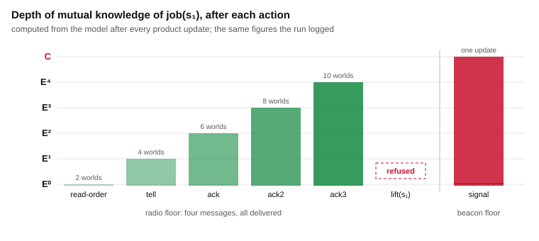
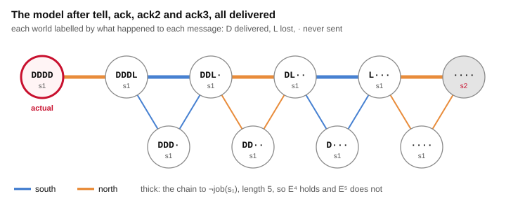
The model, action by action
The figure steps through the model after every action, for the radio protocol, the beacon branch the recorded run took, and the beacon lit with north at no viewpoint. Worlds are placed by their distance from the designated world, so the chain that bounds the depth reads left to right. A red ring marks a designated world; a line in a robot's colour joins two worlds that robot cannot tell apart, and the chain is drawn thick. Only the part of the model reachable from the designated world is drawn: nothing else bears on what anyone knows.
Computed by the product update of tools/trace.py from the tasks plank grounds. The world counts agree with what the epistemic state logged during the runs.
The beacon
If \(\mathit{at\text{-}view}(a)\) holds at every world for both robots and \(S(i, K_i\chi)\) is applicable, then \(M \otimes S \models C_G\chi\). Every type is Fully, so a relation of the product never changes the event; every world reachable from the designated \((w,\sigma)\) is some \((v,\sigma)\), whose existence requires \(K_i\chi\) at \(v\), hence \(\chi\). ∎
If \(\mathit{at\text{-}view}(j)\) fails everywhere, \(j\) is Oblivious, its class at \((w,\sigma)\) is \(\{(v,n) : w R_j v\}\), and the \(n\)-copies carry the old valuation: \(j\) knows after the signal exactly what it knew before. If it did not know \(\chi\), \(E_G\chi\) fails after the signal. ∎
So the announcement is public only because each robot's view of the beacon is itself common knowledge, and that is what the floor and the domain supply together: the viewpoints are on the floor plan, and the move to them is public. Lit with north at no viewpoint, the model has three worlds, the depth stays at \(E^0\), and lift does not apply; the validator checks this case.
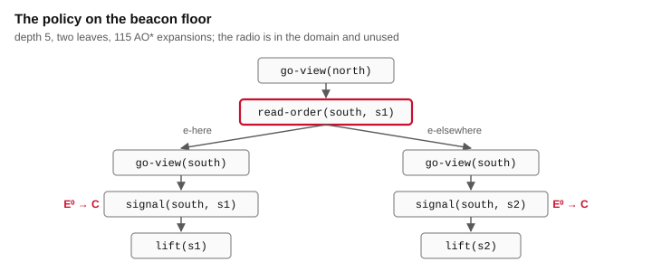
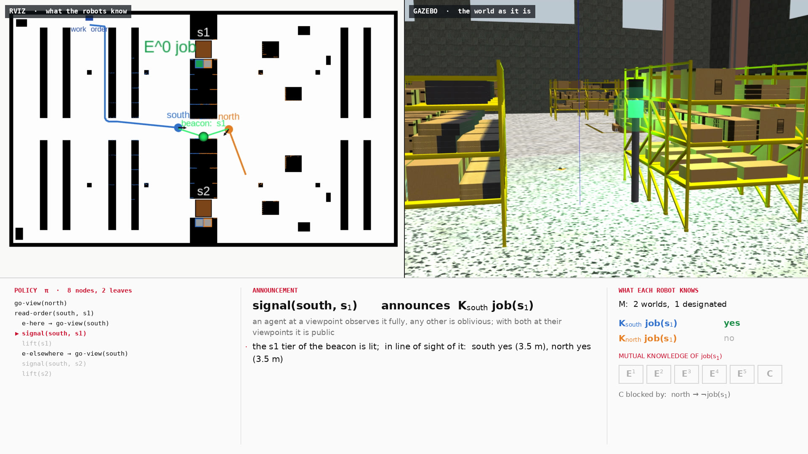
Positions that are not announced
Proposition 3 needs the positions to be common knowledge, and the domain supplies that by making the move to a viewpoint public. The domain coordinated-attack-positions removes the assumption. A move is witnessed only by the robot that makes it: the other considers possible that it did not happen, and believes nothing false about it. The signal is made where its listener may not be watching, as an unconfirmed announcement: the tier lit where the listener sees it, lit where it does not, or nothing, with the announcer relating the first two and the listener the last two. It is the lossy message again, the listener's position deciding which of the first two occurs. The floor adds one action: from their viewpoints in t2 the robots see each other, and a sighting announces to both that both are there.
If the announcer considers possible a world \(u\) in which the listener is not at its viewpoint, and the listener there does not know \(\varphi\), then after the signal \((w,\sigma) \mathrel{R'_i} (u,\sigma') \mathrel{R'_j} (v,n)\) with \(v \not\models \varphi\): the distance is at most two, and \(E^2\varphi\) fails. ∎ On the floor, \(u\) is the copy in which north never left its start.
With both robots at their viewpoints the sighting is public, and makes their positions common knowledge. A signal after it has no world left in which the listener was not watching, and gives \(C\). A sighting after the signal removes those worlds too, and makes the earlier signal common knowledge after the fact. ∎
| instance or order | result |
|---|---|
| viewpoints see each other | policy of depth 6, two leaves, 298 expansions: north to its viewpoint, the order read, south to its viewpoint, the sighting, the signal, the lift |
| viewpoints do not | no policy: the space is exhausted at depth 8, beacon or not |
| signal, no sighting | \(E^1\), as one radio message; lift not applicable |
| sighting, then signal | \(C\) |
| signal, then sighting | \(C\) |
The first version kept the signal's conditional audience, and the planner found a policy on the floor where the robots never see each other: under the per-state reading, whether north saw the beacon was common knowledge by construction. The trace, which then read the conditions world by world, refused the lift there. The domain now states in the event model what the observability conditions could not, and the trace uses the tools' reading.
Both instances were run in Gazebo: the sight instance on the beacon floor, and the blind instance on the same floor with a stack of crates on the axis of t2, which the floor-plan check confirms leaves the beacon in line of sight from each viewpoint and hides each viewpoint from the other. The sighting is made by each robot's own laser: along the bearing to the other robot, no beam may return short of it. Each unwitnessed move doubled the model, and until the sighting neither robot knew where the other stood.
| floor | what the run reported | model after |
|---|---|---|
| blind | no policy, the space exhausted at depth 8 in 0.4 s; the policy for the sight floor run without its sighting; north at its viewpoint after 18 s, south after 48 s | 8 / 1 · \(E^0\) |
| signal(south, north, s1): north sees it, e-signal-seen. North now knows the stand, and where south stands, since the signal is made only from a viewpoint; south knows nothing more about north | 10 / 1 · \(E^1\) | |
| lift(s1) refused: (C (south north) job_s1) does not hold; the chain that blocks it is south, then north | refused | |
| sight | policy of 10 nodes and 2 leaves in 0.2 s; north at its viewpoint after 17 s, south after 50 s | 8 / 1 · \(E^0\) |
| sight(north, south): each robot 6.6 m from the other, each laser reads 6.7 m along the bearing; both positions known | 10 / 1 · \(E^0\) | |
| signal(south, north, s1): north sees it, e-signal-seen | 13 / 1 · \(C\) | |
| lift(s1): starts 0.00 s apart, arrivals 0.40 s apart; load raised 0.12 m | 1 / 1 · \(C\) |
Planning
The task is conditional epistemic planning in the sense of Bolander and Andersen[3]: a policy over pointed models, branching on sensing outcomes. plank grounds each floor into 12 atoms and 28 ground actions, with the intermediate and the lossy libraries together.
| instance | result | measure |
|---|---|---|
| beacon floor | policy, depth 5, 2 leaves | 115 expansions, 154 generated, 0.2 s |
| radio floor, one message per level | no policy | space exhausted at depth 5 |
| radio floor, messages repeatable | no answer | searched to depth 8; timed out at 9 in 240 s |
The exhaustion proves the bounded statement, the timeout proves nothing, and the corollary above proves the unbounded one. The three agree.
The floor
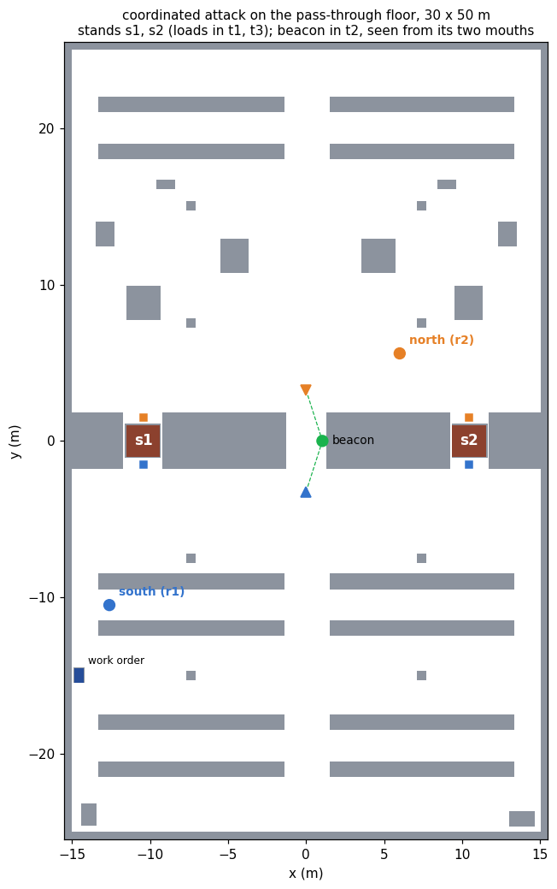
The domain makes four claims about this geometry, and the floor generator checks each on the plan, by casting rays over the occupied cells, before it writes anything.
| claim | what depends on it |
|---|---|
| from where they start, neither robot sees the other or the beacon | the radio is the only channel on the radio floor |
| from its viewpoint, each robot sees the beacon | the observability condition of signal |
| under the two ends of one load, the robots do not see each other | meeting at the stand does not replace the beacon |
| every place a robot is sent is reachable over the inflated plan | a correct policy is drivable |
Each action is performed by a ROS 2 node, and the model is advanced by the ePlanSys epistemic state with Aletheia's own product update. The executor checks each action's knowledge requirement against that model before dispatching it; for lift(s1) the requirement is (C (south north) job_s1).
| action | performed by |
|---|---|
| read-order | south drives to the terminal; the outcome is the work order, the warehouse's record |
| messages | put on the receiver's inbox and awaited, which checks that the designated event occurred; nothing tells the sender |
| go-view | drives to the mouth of t2 and checks the beacon is in line of sight from where it stopped |
| signal | lights the tier for the stand, and refuses if any robot the model places at a viewpoint cannot see the beacon |
| lift | drives both robots to their mouths, fixes one start, drives each under its end, and raises the load |
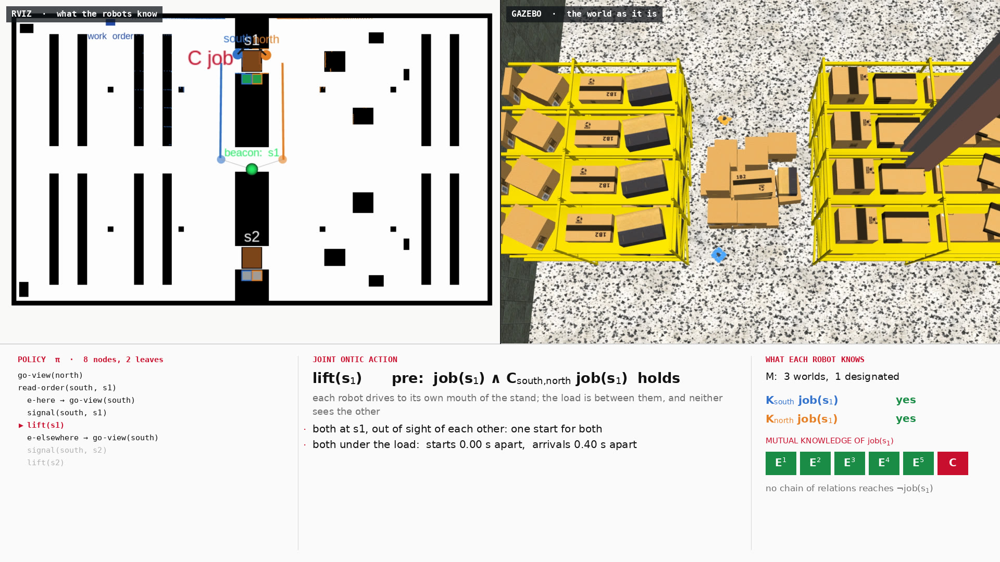
Defects
One event named twice is one event. The lost event was first given by passing the delivered one a second time. plank keys an event model by event name, the two became one, the loss vanished from the model, and the radio floor was reported unsolvable at depth three for the wrong reason. Each message now has a lost event of its own.
A signal from the terminal. Before reading the order required the reader to be away from its viewpoint, the policy sent south to its viewpoint, then to the terminal, and had it signal from there. The model placed south at its viewpoint; the line-of-sight check read south no, north yes. The domain now orders the two, and the signal node refuses whenever the model and the floor disagree about who sees the beacon.
Teardown. In the runs of the radio and beacon floors the action nodes exited on signal 11 as the launch shut down, after the result was logged. The cause was a mismatch of two builds of rclcpp_cascade_lifecycle: the executor's packages are compiled against the header ROS 2 Humble ships, and its workspace loads a newer library whose node class has two members more. The launch now preloads the library the headers describe, and in the runs of the positions floors every node exited cleanly.
Limits
References
Reproduction
ros2 launch coordinated_attack_demo coordinated_attack_launch.py floor:=radio
ros2 launch coordinated_attack_demo coordinated_attack_launch.py floor:=beacon
ros2 launch coordinated_attack_demo coordinated_attack_launch.py order:=s2
ros2 launch coordinated_attack_demo coordinated_attack_launch.py floor:=sight
ros2 launch coordinated_attack_demo coordinated_attack_launch.py floor:=blind
bash tools/validate.sh # eight checks, no simulator
bash tools/record_demo.sh radio s1 /tmp/raw_radio.mkv /tmp/run_radio.log
bash tools/record_demo.sh beacon s1 /tmp/raw_beacon.mkv /tmp/run_beacon.log
bash tools/record_demo.sh sight s1 /tmp/raw_sight.mkv /tmp/run_sight.log
bash tools/record_demo.sh blind s1 /tmp/raw_blind.mkv /tmp/run_blind.log